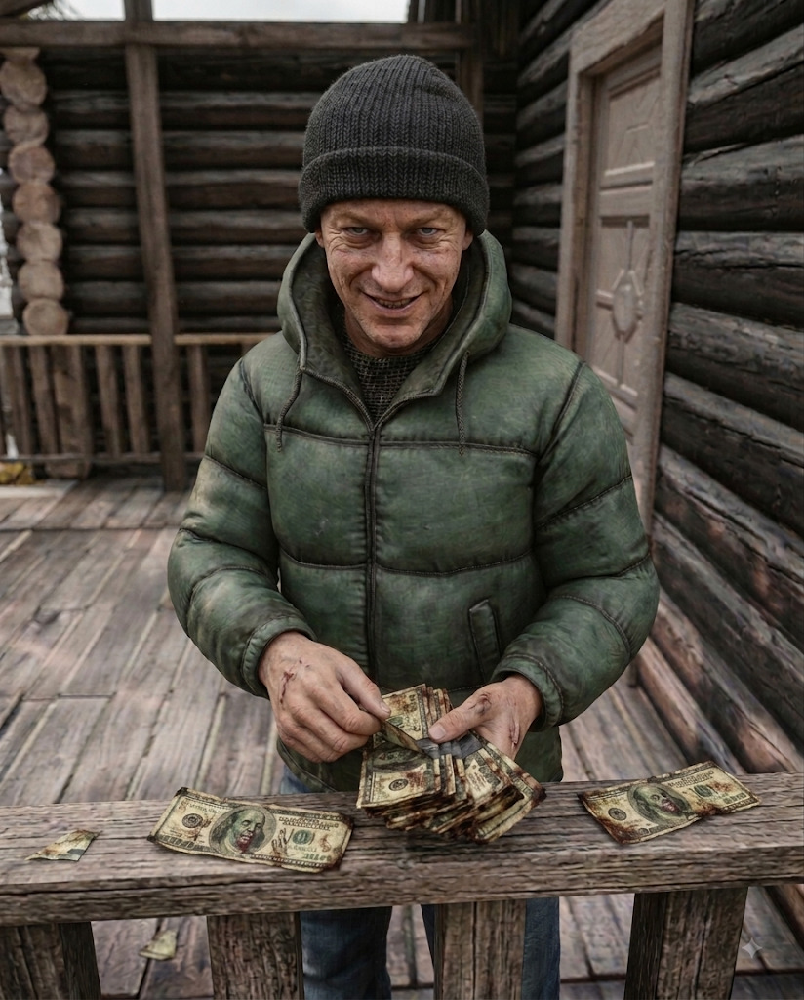

What Rolf Sells
- Mag Loaders
- Navigation gear
- NBC Gear
- Sleeping Bags
- Workbenches
Rolf is the mainland's Zombie Note trader, turning those strange scraps of post-collapse currency into practical gear. Most of his stock is available for purchase with Zombie Notes, while the rare fishing gear he accepts follows a very different rule: you have to pull it from the water yourself before Rolf will buy it from you.
Rolf was never much of a believer in official money, even before official money stopped meaning anything.
Before the Collapse, he spent years moving between seasonal jobs, dock work, storage yards and whatever else paid cash without asking too many questions. He learned early that value had less to do with what was printed on a piece of paper and more to do with what people were willing to trade for it.
That instinct kept him alive when the old economy vanished.
While most survivors tossed aside the first Zombie Notes they found as worthless scraps, Rolf noticed something different. People kept collecting them. Traders started accepting them. Then people started hunting for them on purpose. A currency was being born in real time, ugly and improvised, but real all the same.
Rolf began stockpiling practical equipment and trading exclusively in Notes long before the idea looked sensible. Navigation gear, NBC equipment, sleeping kits, workbenches, anything useful enough to make someone dig through a pocket and count their strange new money twice.
His soft spot is fishing gear. Not the ordinary hooks and rods anyone can scavenge, but the unusual pieces that only seem to surface after enough time spent with a line in the water. Rolf refuses to sell them. If you want one, you earn it the same way everyone else did: by fishing until the water decides to give something back.
Ask him what a Zombie Note is really worth and he will usually glance at his shelves before answering. “Exactly what you can talk somebody into giving you for it.”
